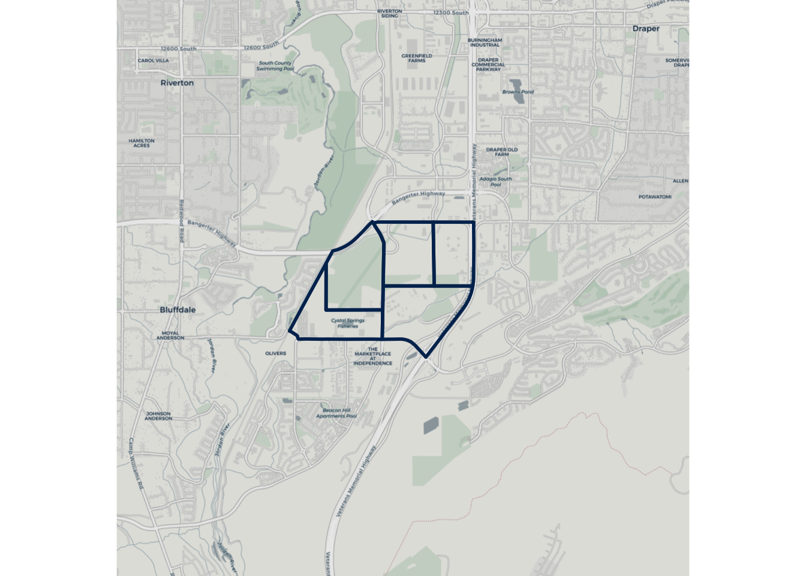
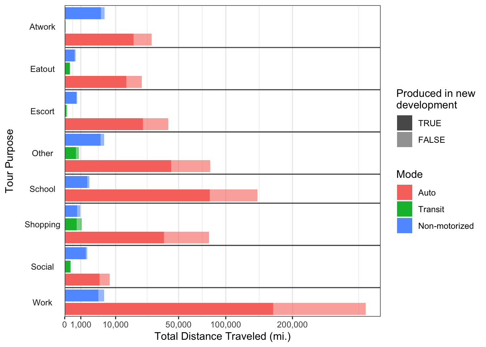
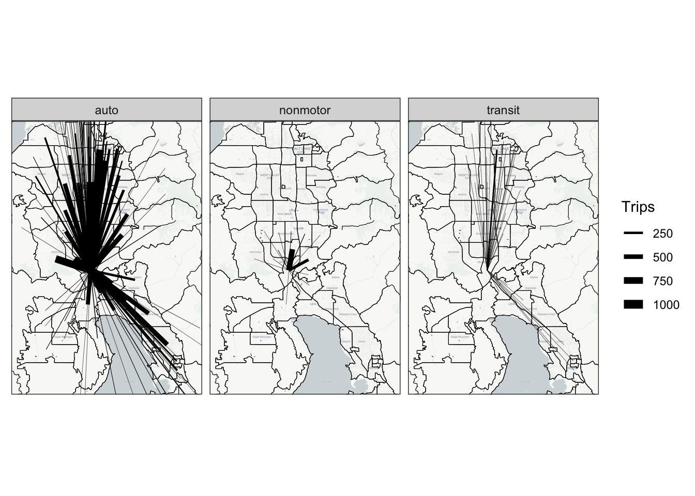
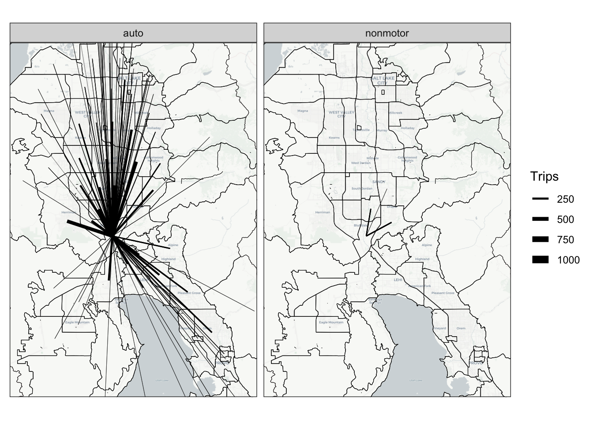
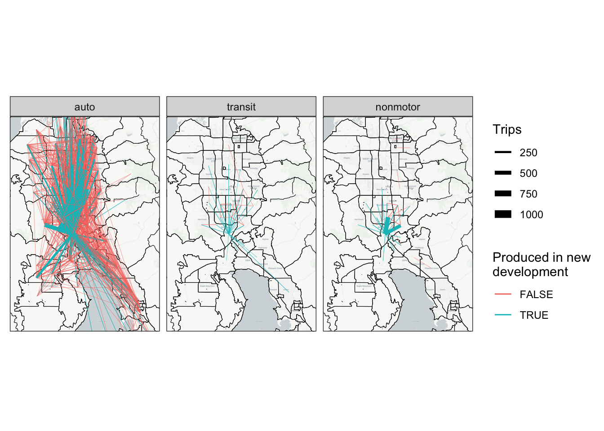

| mpg | cyl | disp | hp | drat | wt | qsec | vs | am | gear | carb | |
|---|---|---|---|---|---|---|---|---|---|---|---|
| Mazda RX4 | 21.0 | 6 | 160 | 110 | 3.90 | 2.620 | 16.46 | 0 | 1 | 4 | 4 |
| Mazda RX4 Wag | 21.0 | 6 | 160 | 110 | 3.90 | 2.875 | 17.02 | 0 | 1 | 4 | 4 |
| Datsun 710 | 22.8 | 4 | 108 | 93 | 3.85 | 2.320 | 18.61 | 1 | 1 | 4 | 1 |
| Hornet 4 Drive | 21.4 | 6 | 258 | 110 | 3.08 | 3.215 | 19.44 | 1 | 0 | 3 | 1 |
| Hornet Sportabout | 18.7 | 8 | 360 | 175 | 3.15 | 3.440 | 17.02 | 0 | 0 | 3 | 2 |
| Valiant | 18.1 | 6 | 225 | 105 | 2.76 | 3.460 | 20.22 | 1 | 0 | 3 | 1 |
4 Land Use
In our first scenario, we changes the land use at The Point.
The change is based on WFRC 2050 SE data forecast, in turn based on development plan of The Point.
This adds X jobs and X households, etc. (show map/table)
Table 4.1 shows the change in lu data, and Figure 4.1 shows these TAZs.

4.1 Creating the scenario
In the WFRC model the change is trivial to implement. We just copy/pasted the se data from 2050 to 2019 for the affected zones.
ActivitySim requires two things for this scenario: updated SE data and a new pop. The updated SE data is the same as in the WFRC scenario, so is also trivial to implement. The pop, however, is not. New controls.
New population for only the affected area, then joined to existing. There were no existing households so we didn’t need to remove any (we’re not double-counting).
? Note in realistic scenario you could use just the land use forecast as controls directly, rahter than the whole census shenanigains but we didn’t do that.
4.2 Analyses
We looked at person-miles for both scenarios. Figure 4.2 shows the increase in person-miles for the ABM. Shaded based on “in-zone”. (Not many transit trips since we didn’t add transit). Figure 4.3 shows for TBM.

Can’t really shade since nhb relocation happens before mode choice. Best you can do is difference the NHB matrices (Figure 4.4 (2-panel)) (If there are nhb trips in/out of zones): clearly some of these are not nhb from residents since they occur in these zones. Big problem: They’re all in the new zones


With abm, you can follow people and trace their exact paths (Figure 4.5).
